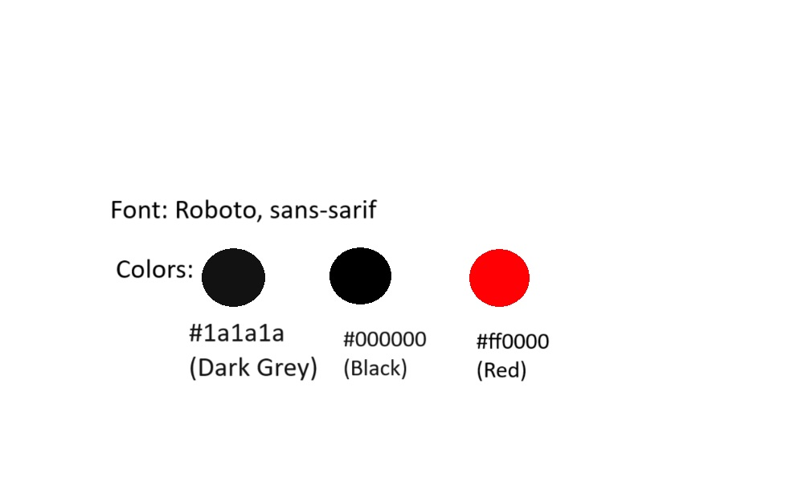
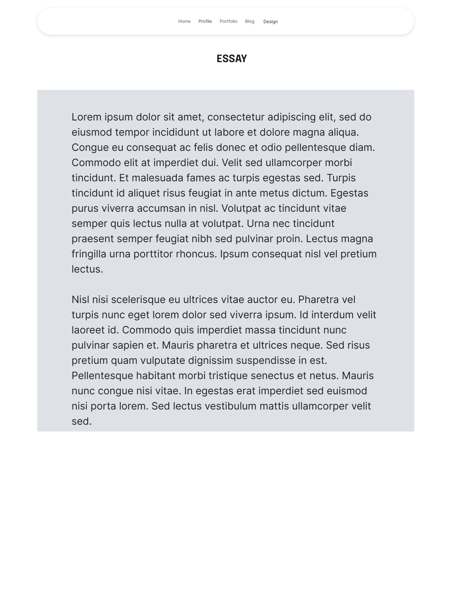
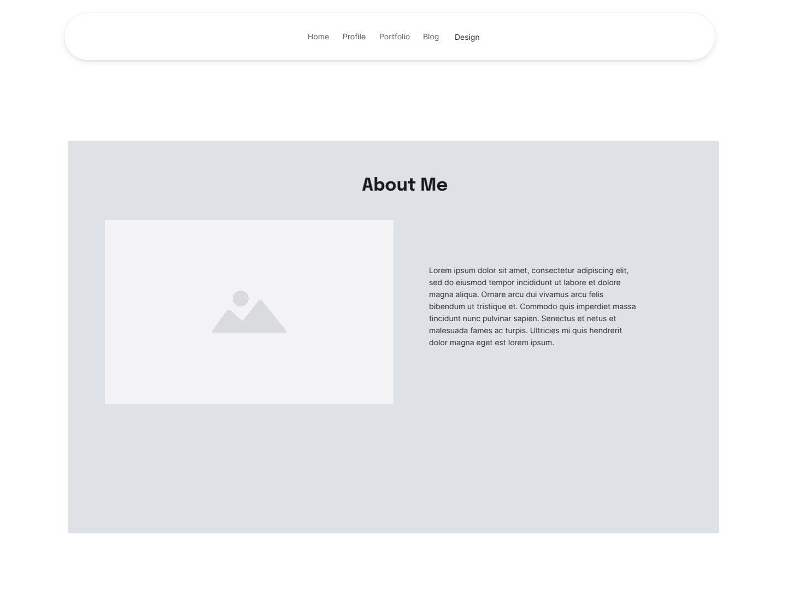
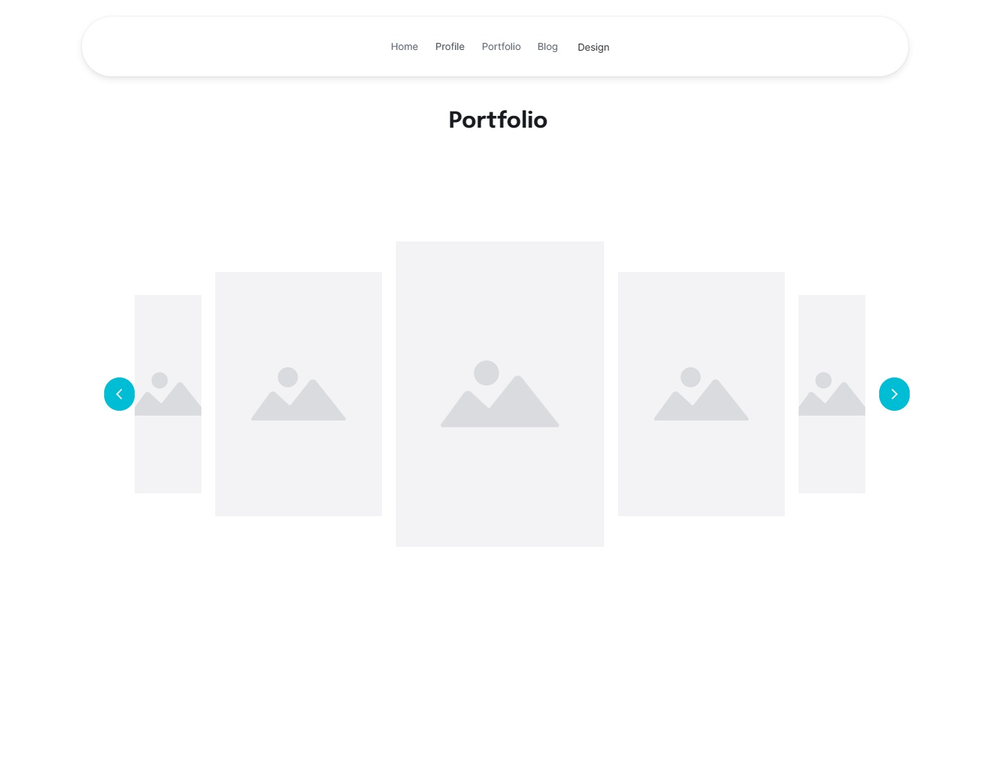
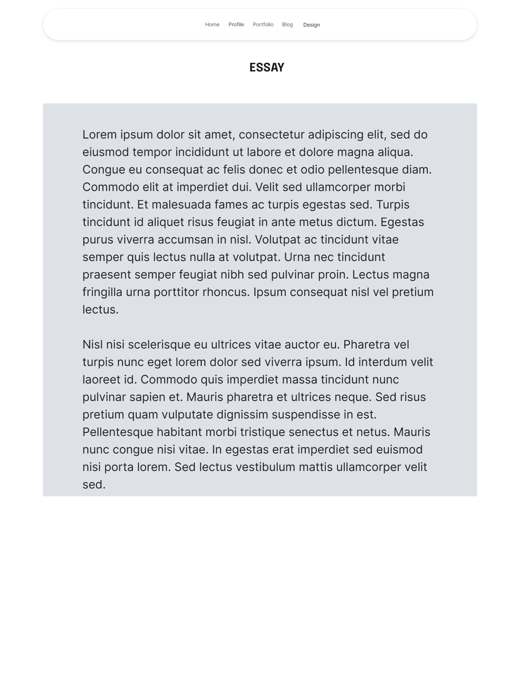
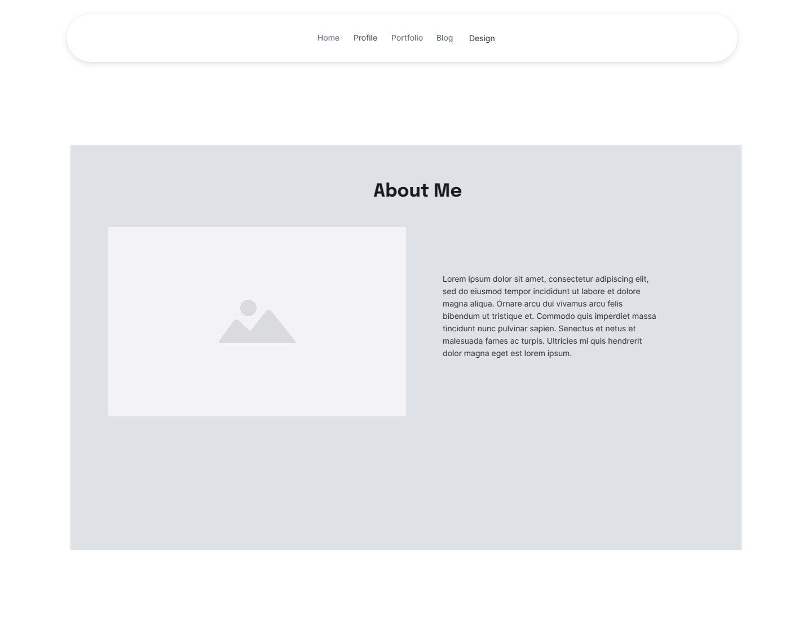
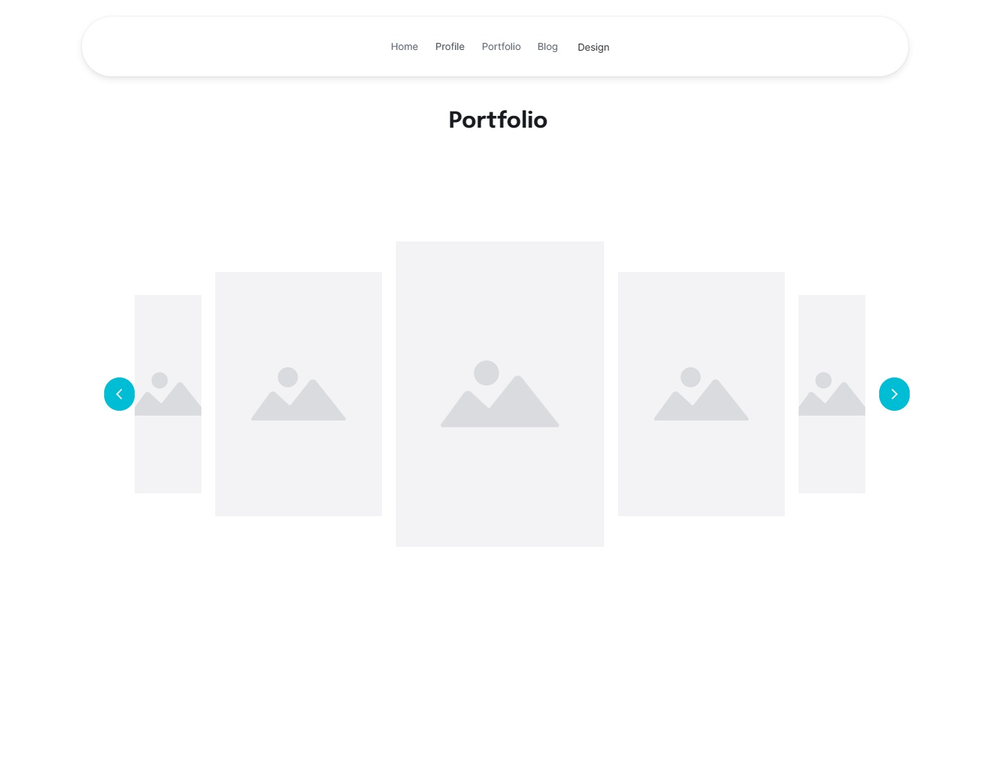

Styles
StylesFont and Colors : I haven’t yet had a final say on what I plan on using for this. However, our main goal is function over form, so we’ll try to keep it as simple as possible, without ofcourse becoming bland. This is also a bit evident in the reference material chosen.
Updated Font and Colors : Roboto, san-sarif as chose fonts. Colors to be used will be grey for the background, white and red for the fonts.
Goal Alignment
-Make a portfolio website, that showcases my work using easy to navigate components . The site should place huge on function over form.User Flow -The user should be able to smoothly navigate to every available page, regardless of what page they’re currently on.
Information Structure
My Website
Homepage: Page title and introduction to the user. Information about the website
Portfolio Page: Page title, about the work, detailed portfolio items
Design/style : page title, different design and style sections and descisions
Essay : page title, essay sections
Blogs : Page title, blog sections, additional references.
Profile :page title, information about my self and profiling of my proffesional life.
Interface Elements
These elements will be used all across the website to keep consistency.
Buttons: For navigation and input
Scroll sliders: For navigation across the page the user finds themselves on
Links: These will allow the user to navigate between the different pages and to/from any additional websites that might link to the site because of references.
Images: Used to illustrate certain aspects to the user Updated Designs
Information Structure
My Website
Homepage: Page title and introduction to the user. Information about the website. Profile section merged with the homepage.
Portfolio Page: Page title, about the work, detailed portfolio items
Design/style : page title, different design and style sections and descisions
Essay : page title, essay sections
Blogs : Page title, blog sections, additional references.
Interface Elements
These elements will be used all across the website to keep consistency.
Buttons: For navigation and input
Scroll sliders: For navigation across the page the user finds themselves on
Links: These will allow the user to navigate between the different pages and to/from any additional websites that might link to the site because of references.
Images: Used to illustrate certain aspects to the user
Modals: Display additional information, forms, or media without navigating away from the current page.
Sliders: Showcase multiple images or content in a dynamic and interactive way.
Cards: Organize content into visually distinct sections to highlight key information.

Reference Websites
Visit Porsche Website I chose the Porsche website because of its use of black and white. The site also has a section on the homepage where different interactive sections from other pages are previewed. I want to try and incoporate this in my site as well. Camille Normal Portfolio site This for me is one of the best portfolio sites I've come across. The way the user navigates through the site was extremely inovative while interesting. It looks simple as well, without being completely static and bland. 




